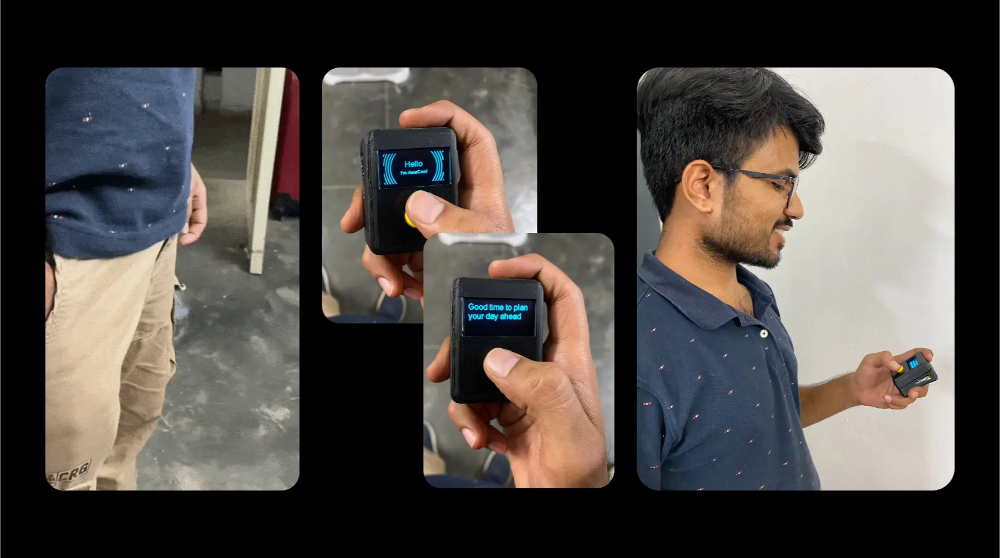

Dealing with binge behaviour through mindfulness
MASTERS PROJECT, RESEARCH, PSYCHOLOGY

Binge eating and watching are usually related, and their starting point in many cases is boredom. Although boredom is not bad but it presents an endless loop that is hard to escape and shifts our attention to future thinking.
To help people make the best use of boredom, I created a device that suggests mindful activities at the click of a button. These activities have been proven to breal the boredom loop and bring attention back to the present by initiating a mindful state.
Context
As our classroom course on problem-solving at NID, we are encouraged to pick our personal problems as project topics. I chose binge eating and overeating since I've dealt with drastic weight changes because of my eating habits in the past few years.

"I binged a Netflix show for 10 hours, and regretted it the next morning" — YouTube comment
Primary research to understand the current binge habits of people
I conducted 5 user inteviews over 3 days of people I recruited from WhatsApp, Slack Channels, and the campus. Participants were aged between 23-30yrs. Here are the key findings from the research
- Participants often start binge-watching to fill time as it'd become a habit, and they can't think of any alternatives.
- Participants start watching series/shows to avoid stressful conversations with friends or family.
- Participants watch TV series suggested by friends or family to engage in a conversation with them.
- Participants also watched series/shows to learn new languages, but that was rare.
Secondary research to get a broader perspective
To understand the phenomenon better, I conducted online research and found out
Our environment shapes our behaviour immensely. Everything around us is designed to make us consume more, from transparent fridge doors to large food containers

Other Findings
- Binge-watching is followed by binge-eating in many cases, and it happens subconsciously.
- Boredom is the biggest reason people start binge-eating or watching.
- Awareness of boredom loops & our environment can help us avoid bad choices.
- Being idle is important as it helps us wind down and reflect on things we've learned.
Based on primary and secondary research, I decided to shift my from binge behaviour to boredom and started thinking of an intervention at the conjuction of boredom and binge watching.

Research on boredom
Boredom/Idleness is a loop. Binge-watching and eating provide an effortless way out of this seemingly endless loop. If we are aware we're in a loop, it helps us find ways to get out of it.

- If we give ourselves time to be idle, we're not distracted in our focus time; therefore, a clear boundary is created between idle and focus time. Not only this, both benefit from each other; if we can spend our idle time better, we can focus better.
- We can't think of any alternatives when we're bored; hence we stick to our old habits, which are usually destructive. In this case, watching or eating something.
- We act on our impulses, as we're not in 100% control our actions.
When bored, we mostly think of the future, not the past.

💬 Based on my research on boredom, I ran a 5 day experiment during which I asked people to send me a voice note or text whenever they were idle and I sent them an activity they could take up in that moment.

Feedback from participants
People reacted positively to the experiment and were more aware of their idle time towards the end.
"I was able to understand the different cues around me and make distinction between my idle and work time." — Shreya, 24 · College Student
"I enjoyed doing small activities that were also fun, moreover I was aware of when I was wasting my time and when I was actually idle" — Shubham, 26 · Manager at an MNC.
Post the experiment, I compiled all the findings and decided to create a device
What does the device do?
It suggests constructive (not productive) activities from Berkeley University’s Greater Good in Action Website which contains science backed practices for a meaningful life. These activities shift our focus from the future to the present & initiate a mindful state. All of it with a click of a button.
Other Findings
- It lets people generate activities voluntarily, hence giving them back control over their actions. Once they complete an activity, they'll be motivated to complete other productive tasks in their day.
- Habits follow the framework of Trigger/Cue, Behaviour, and Consequence. An effective way to change habits is to keep the trigger same but change the behaviour.
The device does that by replacing the behavior of pulling out phone from the pocket for scrolling with getting an acivity suggestion from the device.


Why is idle time important?
- When we're idle, our brains can connect between unrelated concepts that have been fed into our subconscious. Some of the most important discoveries have happened when people were not working.
- If we spend our idle time well, we can focus better. Clearly demarcating idle time and focus time, helps our mind wanders less.
- We can learn or internalize our previously learned skills, like an instrument, if we're not focused on anything.
Interesting findings
- My assumption that stress/trauma is the biggest contributing factor to binge habits turned out false, as boredom turned out to be the biggest factor.
- No amount of problem solving can solve for awareness. If we're aware of our surroundings and pay attention to our own behaviour, we've solved 90% the problem.